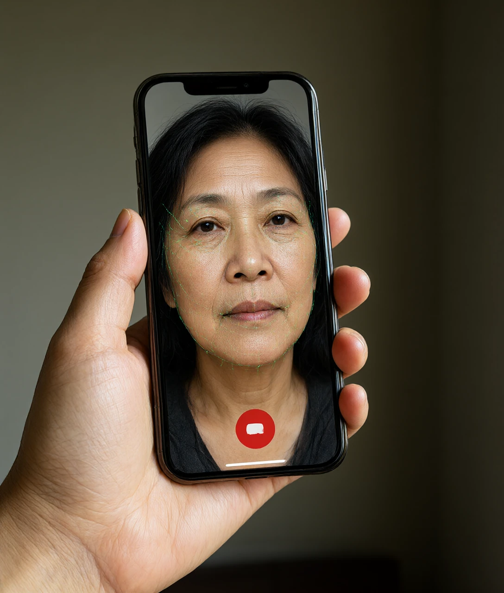

写给爸妈和爷爷奶奶的一课 · 不背套路，只讲原理
下午三点，家里的座机响了。
「奶奶，我出事了……」电话那头是一个男孩的声音，带着哭腔，很急，「我骑车撞了人，人家要赔钱，我现在在医院，你别告诉我爸妈，你先转两万过来，我把账号发你……」
声音是孙子。语气是孙子。连那句「你别告诉我爸妈」，都是孙子平时闯祸时的口头禅。
很多老人就是在这个瞬间，手开始抖，脑子一片空白，然后去了银行。
而那通电话里，一个字都不是孙子说的。
它不是录音拼的，不是找人模仿的。它是用一台普通的电脑，拿孙子在网上发过的一段十几秒的视频，现场「造」出来的。造一句话，只要几秒钟。
这篇不讲「骗子的十种套路」——套路每个月都在换，背不完。这篇讲的是三件更根本的事：声音为什么能被复制？脸为什么能被换掉？人为什么偏偏在那个瞬间松了手？
搞懂这三件事，套路怎么变，您都不慌。
过去骗子要冒充熟人，得先打听你家的事、学你孙子的口音，准备半个月。现在他只需要一段公开的视频或语音——朋友圈、短视频、家族群里发的那条「奶奶生日快乐」，都算。
要搞懂声音为什么能被复制，先得知道声音是个什么东西。
声音是空气在抖。您说话的时候，喉咙里的声带在颤，颤动推开周围的空气，空气又推开更远的空气，一层一层传出去，最后撞到别人的耳朵里。耳朵里那层薄薄的鼓膜跟着抖，脑子就把这个抖动翻译成「有人在说话」。
关键在这儿：抖动是可以被记录的。
麦克风里有一片薄膜，空气一抖，它就跟着抖，抖出来的动作变成电流的变化。然后录音设备做一件事——每秒把这条电流切几千上万刀，每一刀记一个数字。一秒钟的声音，被切成几万个数字排成一长串。
到这一步，声音就不再是「空气的抖动」了，它变成了一串数字。
而数字，是可以随便改、随便拼、随便复制的。这是后面所有事情的根。
但光有数字还不够。骗子还得解决一个问题：怎么让机器知道「这是谁在说话」？
您的耳朵其实一直在做这件事——您听得出是老伴还是邻居，哪怕他们说的是同一句话。科学家发现，人说话的声音里其实叠着两层东西：
一层是「说了什么」——字词、句子，这部分天天在变。
另一层是「谁在说」——音色。这一层，来自您喉咙、口腔、鼻腔这些「管子」的形状。管子粗一点细一点、长一点短一点，声音的味道就完全不同。
而这些管子的形状，成年以后基本不变。这就是声音的「指纹」。
所以骗子的做法就清楚了：拿到您孙子几秒钟的录音 → 让机器把「谁在说」这一层单独抽出来 → 再把抽出来的音色，套到任何一句新话上。
「奶奶我出事了」这句话，孙子可能一辈子没说过。但机器照样能让他说得像真的。
您听熟人说话，认的是「声音的味道」，不是「他说了什么」。这本来是个很省力的办法——但它也意味着：只要味道对了，内容再荒唐，您也会先信三分。骗子要的就是这三分。
「声音能造假，那我要求视频通话总行了吧？」
这个办法在几年前管用，现在不行了。
原因和声音一样：脸也是可以被拆成数字的。
人的脸，机器并不认识。它认的是一堆关键点——两只眼睛在哪儿、鼻子在哪儿、嘴角往哪个方向弯、下巴的轮廓是什么弧度。一张正面的照片，就能把这些点的位置全部量出来。
有了这些点，机器就可以做一件事：让别人脸上的动作，贴到这张照片上。张三眨眼，照片里的李四就眨眼；张三轮廓一动，照片里的李四也跟着动。
所以视频通话里那个「孙子」，可能真的只是一张照片，被别人的表情牵着动。
那怎么破？让对方做一个不常见的动作。比如说「你把右手举起来，在脸前面晃三下」。
为什么这招有用？因为造假要实时跟上，动作越大、越遮挡，越容易露馅——手晃过脸的时候，画面会出现不自然的糊、边界、或者干脆跟不上。这类破绽，本质上是机器算不过来。

不要跟骗子比「眼力」，要比「成本」。您让他做一个奇怪的动作，他要么露馅，要么嫌麻烦去骗下一个人——两种结果对您都是好事。
讲到这里，很多人会想：我这么精明，怎么会信？
不是您糊涂。是骗子按对了一个按钮。
我们脑子里其实住着两个「工人」（本站另一篇《大脑里的两个小工人》讲过这件事）：
一个是慢的，管检查、管算账、管「等一下，这不对劲」。
一个是快的，管报警、管逃命、管「别想了，先做」。
平时是两个一起干活，慢的说了算。可一旦您紧张、害怕、心跳加快，身体会做一件事：把血和注意力都调去应付危险，慢的那个工人被压了下去。
这时候，快的那个独自做主。
骗子的话术，说白了就是在给您制造这种状态。您回头看那通电话，会发现它有三个零件：
一，制造时间压力。「马上」「来不及了」「人家在等着」——让您没时间坐下来想。
二，切断外部核实。「别告诉我爸妈」「别跟别人说」——把可能帮您踩刹车的人全挡在外面。
三，指定唯一路径。「转到这个账号」「加这个微信」——不给您第二条路走。
这三步合起来做的事只有一件：把您脑子里那个「慢工人」按下去，然后替您做主。
所以，防诈骗的核心不是「变聪明」，而是——想办法把那个慢工人叫醒。
「越急越要慢。」这不是劝人的话，是有生理依据的——您越急，检查的能力越弱。所以「先停三十秒」这个动作，本身就是最有效的防线。
原理讲完了，落到做法上，其实只有三条。它们不是「识别骗子」的技巧，而是把被拆掉的检查环节重新装回去。
铁律一：先挂断。
不管对方说得多急，先挂。挂断不礼貌，但挂断不花钱。挂掉的那三十秒，就是让慢工人回来的时间。
铁律二：用您自己存的号码回拨。
不要用对方给的号码，不要用对方发来的链接。翻出手机通讯录里您自己存的孙子号码，打过去。这一条几乎能挡住全部冒充亲友的骗局——因为骗子控制不了您手机里那个号码。
铁律三：家里设一个暗号。
比如一个只有家里人知道的小问题：「咱家那只猫叫什么来着？」「上次去的那家馆子在哪条路？」音色能造，内容造不出来。
这三条为什么有效？因为它们都不需要您判断真假——只需要您做一个动作。骗子最怕的就是这类「不需要聪明」的办法。
最后说个好消息：AI 不是只帮骗子，它也帮您。
手机自带的骚扰拦截、陌生号码标记，背后就是 AI 在帮您筛；看不明白的短信、合同、药品说明，可以拍下来让 AI 用大白话讲一遍；家里的智能音箱能帮您设提醒、念消息。
但也要记住它的边界：AI 也会看错、也会编。它可以帮您理解、帮您提醒，但最后拍板的那一下，还得是您自己。
技术本身没有好坏。用它的人有。